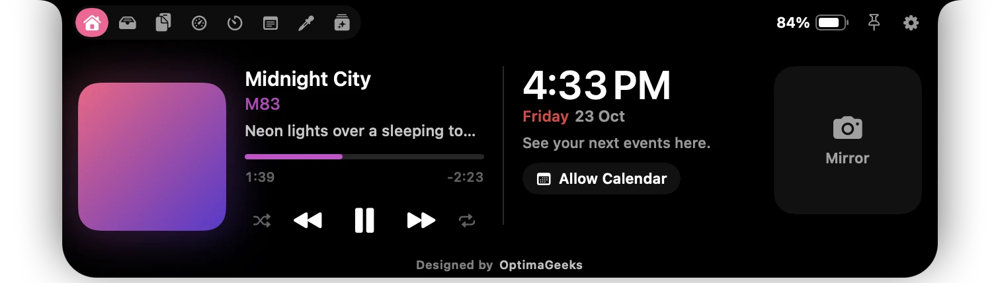

01 — Music
Now playing, up where you look.
Artwork, a live visualizer and the time in the closed island. Open it for a seekable scrubber, synced lyrics and controls — for Music, Spotify, browsers and video.
- Album-tinted accent and a soft ambient glow
- Shuffle, repeat, ±10 s, two-finger swipe for tracks
